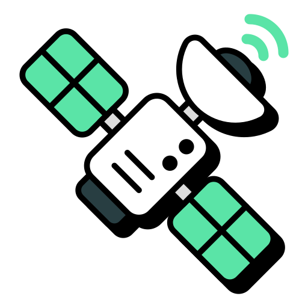
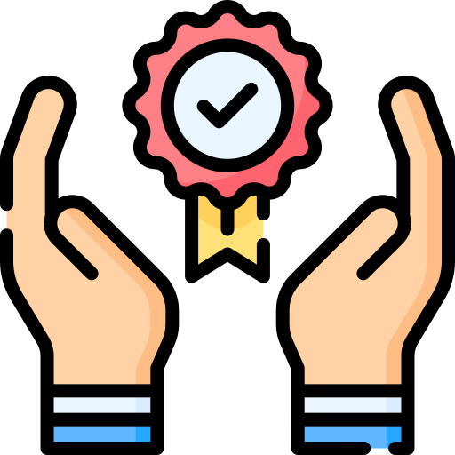
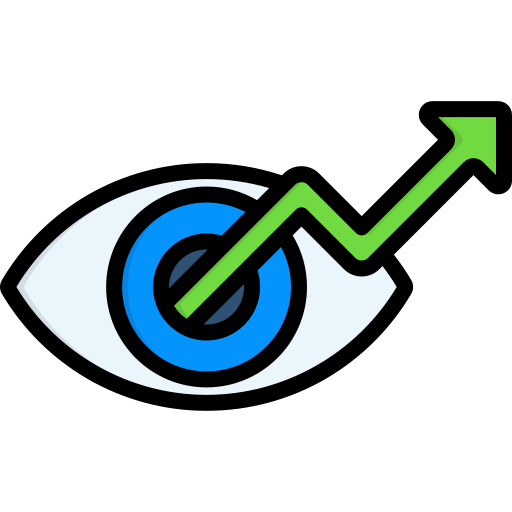
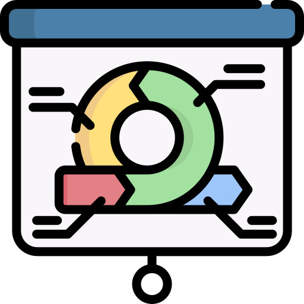

Sobre

O AgriRS Lab é um laboratório vinculado a Divisão de Observação da Terra e Geoinformática (DIOTG) do Instituto Nacional de Pesquisas Espaciais (INPE). Somos um laboratório de sensoriamento remoto com foco na agricultura, estudando e monitorando cultivos agrícolas com o apoio de imagens de satélite e dados geoespaciais. Também desenvolvemos pesquisas em áreas ambientais e sociais, como detecção do desmatamento e mudanças no uso e cobertura da terra. Buscamos conectar tecnologia, ciência e responsabilidade socioambiental para gerar conhecimento e apoiar a tomada de decisões.

Missão
Promover a formação/capacitação integral de acadêmicos oferecendo-lhes condições de conhecimento, desenvolvimento e difusão de tecnologias na área do Sensoriamento Remoto. Apoiar o ensino de graduação e pós-graduação, a pesquisa e a extensão em atividades de Sensoriamento Remoto em âmbito local, regional, nacional e internacional mediante a integração entre recursos humanos e o fomento de disponibilidades de infraestrutura.

Valores
Desejamos ter êxito em nossas atividades e assim, procuramos compartilhar os valores:
- Ética
- Justiça
- Compromisso
- Competência técnica e científica
- Responsabilidade social e ambiental

Visão do futuro
Somos inspirados a cumprir com sucesso todas as atividades que representam para a equipe de trabalho propósitos permanentes servindo de base para o reconhecimento como referência na área de Sensoriamento Remoto na pesquisa, no ensino e na extensão.

Metodologia de trabalho
- Desenvolver integrando pessoas e competências;
- Ensinar praticando e/ou produzindo;
- Produzir ensinando;
- Valorizar a criatividade e a integração.